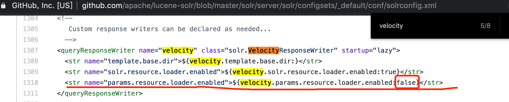

影响范围
漏洞发现者声称 version > 5的版本都受影响。经测试6.2.1，7.3.1，7.4.0，以及最新版8.2.0均存在此漏洞。其他版本暂未测试。
处置建议
由于官方暂未发布该漏洞的修复版，可采用以下缓解措施：
1.若确认不使用相关功能，可在solrconfiog.xml配置文件中删除class为VelocityResponseWriter的节点。检查是否存在configoverlay.json文件，若存在则将其删除。最终重启solr服务。
2.开启Solr的认证功能，只允许可信的流量与Solr服务交互。
技术分析
想要利用此漏洞，可以新建一个默认的core，会默认使用_default的配置。
当使用bin/solr create_core的时候
-c参数是指定core的名字，而有一个-d参数用来指定这个新的core从哪个配置目录下复制过来。如果不显式指定，默认的会用一个叫做_default的配置，而这个配置中是有VelocityResponseWriter功能的。从这个意义上说，「默认配置开启了这个功能」说得通。

这个叫做”_default”的配置内容在这里：
如果自己新建一个core，则其solrconfig.xml配置文件至少需要以下内容：
经测试，此功能依赖相关jar包（server/solr-webapp/webapp/WEB-INF/lib/目录下）。环境搭建tips：
|
其中solrconfig.xml配置文件至少需要以下内容：
|
其中上面的版本号8.2.0需要改成具体的版本号。
在满足以上环境条件的情况下，利用此漏洞分两步骤。
先通过一个HTTP请求将params.resource.loader.enabled这个关键的参数设置true，这样就能允许任意的模板代码从用户的HTTP请求中指定。然后再通过指定任意Velocity模板代码执行任意命令。由于Solr默认未开启认证，在这种情况下，此漏洞利用不需要登录凭据。
Demo
参考
- https://gist.githubusercontent.com/s00py/a1ba36a3689fa13759ff910e179fc133/raw/fae5e663ffac0e3996fd9dbb89438310719d347a/gistfile1.txt
- http://yonik.com/solr-5-1/
- https://stackoverflow.com/questions/56241287/velocity-response-writer-is-not-working-in-solr
- https://stackoverflow.com/questions/50398845/error-loading-class-solr-velocityresponsewriter
- https://lucene.apache.org/solr/guide/8_2/requesthandlers-and-searchcomponents-in-solrconfig.html
- https://lucene.apache.org/solr/guide/8_2/velocity-response-writer.html